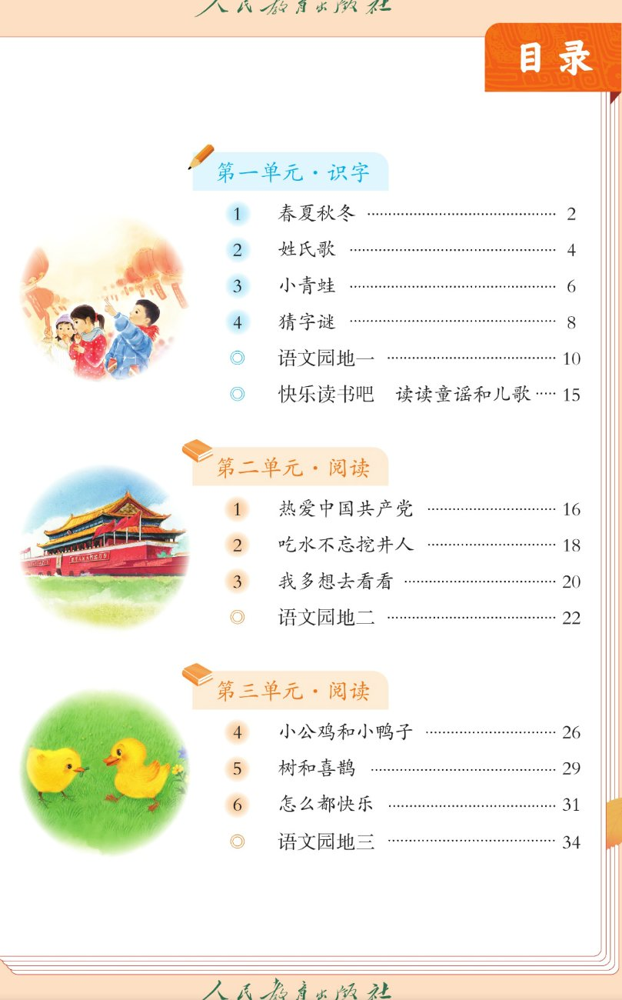
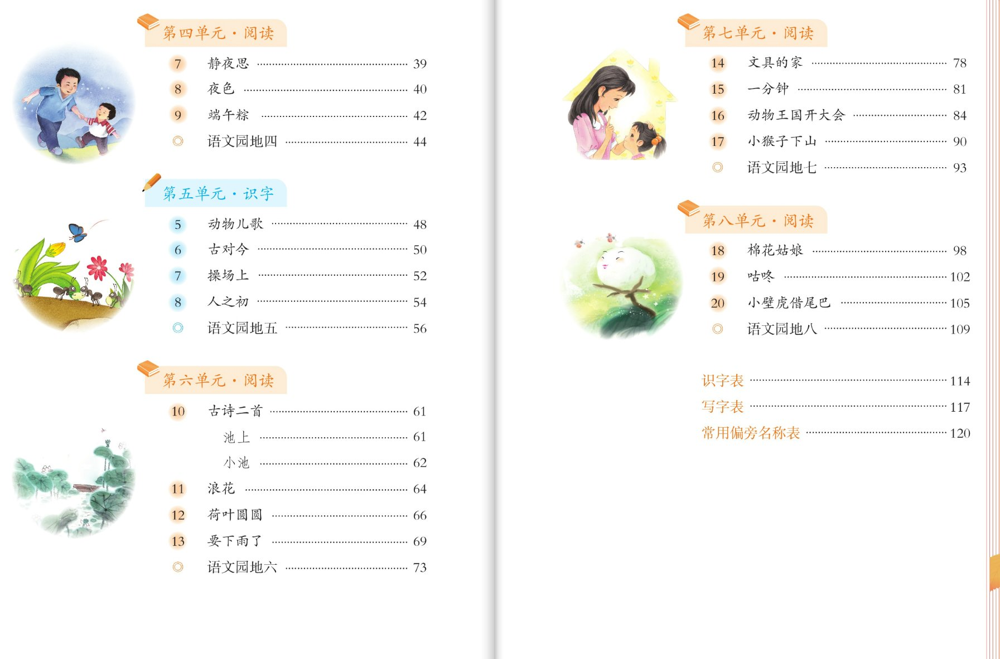

×
🔊 手机听不到声音怎么办？
① 先把手机
媒体音量调大
，确认没开静音、没连蓝牙耳机；在微信里打开的，点右上角「⋯ → 用浏览器打开」。
② 还是没声音？到应用商店免费下载
Microsoft Edge 浏览器
，用它打开本页面就能出声。
③ 换了 Edge 仍然没声音，说明这部手机的
硬件 / 系统不支持
网页朗读（多为老旧机型）。
📖 一年级语文下册 · 有声图文学习中心
统编版 · 打开就能听，点到哪读到哪 · 与一年级上册同一套版式
一课怎么学（六步）：
① 读一读（点哪句读哪句，可开跟读模式）→ ② 认一认（会认字，点卡读字、词语）→ ③ 写一写（田字格 + 书写提示）→ ④ 词语·听写（读两遍→写一写→报答案→听示范句，再比一比意思相近的词）→ ⑤ 想一想（课后题照录 + 8 题四层深入理解，开放题答案不唯一）→ ⑥ 闯关 8 题（点选项即判分）。 底部还有「读这一板块 / 整页连读 / 拼 拼音 / 停」，课本原页点图可放大。
共
8 个单元 · 37 个条目
（含语文园地与快乐读书吧）· 已全部建成
第一单元 · 识字
1 春夏秋冬
已建 · 点开就学
课本第 2 页 · 句级点读 / 跟读 / 会认会写 / 听写 / 深入理解 / 闯关
2 姓氏歌
已建 · 点开就学
课本第 4 页 · 句级点读 / 跟读 / 会认会写 / 听写 / 深入理解 / 闯关
3 小青蛙
已建 · 点开就学
课本第 6 页 · 句级点读 / 跟读 / 会认会写 / 听写 / 深入理解 / 闯关
4 猜字谜
已建 · 点开就学
课本第 8 页 · 句级点读 / 跟读 / 会认会写 / 听写 / 深入理解 / 闯关
语文园地一
已建 · 点开就学
七块活动 · 点读听一听 / 拼音可开关 / 课本原页放大
快乐读书吧
已建 · 点开就学
读读童谣和儿歌 · 点读听一听 / 课本原页放大
第二单元 · 阅读
1 热爱中国共产党
已建 · 点开就学
儿童诗 · 句级点读 / 跟读 / 会认13字会写6字 / 听写 / 深入理解 / 闯关
2 吃水不忘挖井人
已建 · 点开就学
记叙短文 · 句级点读 / 跟读 / 会认13字会写6字 / 听写 / 深入理解 / 闯关
3 我多想去看看
已建 · 点开就学
对话体散文 · 句级点读 / 跟读 / 会认12字会写6字 / 听写 / 深入理解 / 闯关
语文园地二
已建 · 点开就学
识字加油站 / 字词句运用 / 展示台 / 日积月累 寻隐者不遇 / 和大人一起读 快乐的节日
第三单元 · 阅读
4 小公鸡和小鸭子
已建 · 点开就学
童话故事 · 分角色读对话 / 会认13字会写6字 / 读一读比一比 / 深入理解 / 闯关
5 树和喜鹊
已建 · 点开就学
短文 · 句级点读 / 孤单到快乐的变化 / 会认13字会写6字 / 深入理解 / 闯关
6 怎么都快乐
已建 · 点开就学
儿童诗 · 逐行点读 / 感叹号朗读 / 会认13字会写6字 / 照样子说词语 / 闯关
语文园地三
已建 · 点开就学
音序查字法 / 查字法口诀与练写 / 日积月累 赠汪伦 / 口语交际 打电话 / 和大人一起读 谁和谁好
第四单元 · 阅读
7 静夜思
已建 · 点开就学
古诗 静夜思 · 四句点读 / 跟读背诵 / 会认8字会写6字 / 听写 / 深入理解 / 闯关
8 夜色
已建 · 点开就学
儿童诗 · 两小节点读 / 读好句中停顿 / 会认12字会写6字 / 读一读记一记 / 闯关
9 端午粽
已建 · 点开就学
散文 · 长句点读 / 读好标点停顿 / 会认13字会写6字 / 说一说红枣粽 / 闯关
语文园地四
已建 · 点开就学
识字加油站 数量词 / 字词句运用 轻声词 / 做拼音游戏与书写提示 / 日积月累 八个词语 / 和大人一起读 胖乎乎的小手
第五单元 · 识字
5 动物儿歌
已建 · 点开就学
儿歌 · 六行点读 / 动物名称与虫字旁 / 会认13字会写6字 / 读一读记一记 / 闯关
6 古对今
已建 · 点开就学
对韵歌 · 三小节十二行 / 对子与反义词 / 会认13字会写6字 / 七个词语气泡 / 闯关
7 操场上
已建 · 点开就学
词语加韵文 · 六个体育活动词点读 / 足字旁 / 会认12字会写6字 / 说喜欢的运动 / 闯关
8 人之初
已建 · 点开就学
三字经选段 · 两小节八行点读 / 背诵 / 会认13字会写6字 / 读一读记一记 / 闯关
语文园地五
已建 · 点开就学
识字加油站 包字族儿歌 / 字词句运用 查字典与偏旁归类 / 日积月累 歇后语 / 口语交际 一起做游戏 / 和大人一起读 孙悟空打妖怪
第六单元 · 阅读
10 古诗二首
已建 · 点开就学
池上 [唐] 白居易 / 小池 [宋] 杨万里 · 两首诗点读背诵 / 会认12字会写6字 / 读一读记一记 / 闯关
└ 池上 …… 61
└ 小池 …… 62
11 浪花
已建 · 点开就学
散文 · 十个句子点读 / 浪花像淘气的小娃娃 / 会认12字会写6字 / 读一读比一比 / 闯关
12 荷叶圆圆
已建 · 点开就学
散文 · 五个自然段句级点读 / 四个小伙伴把荷叶当什么 / 会认12字会写6字 / 连一连说一说 / 闯关
13 要下雨了
已建 · 点开就学
童话 · 九个自然段分角色点读 / 燕子小鱼蚂蚁下雨前的表现 / 会认14字会写6字 / 读一读记一记 / 闯关
语文园地六
已建 · 点开就学
识字加油站 夏日词语 / 字词句运用 照样子说一说与加标点 / 日积月累 气象谚语 / 和大人一起读 夏夜多美
第七单元 · 阅读
14 文具的家
已建 · 点开就学
短文 · 六个自然段句级点读 / 文具盒就是文具的家 / 会认13字会写6字 / 读一读记一记 / 闯关
15 一分钟
已建 · 点开就学
故事 · 六个自然段句级点读 / 多睡一分钟迟到二十分钟 / 会认12字会写7字 / 根据课文内容说一说 / 闯关
16 动物王国开大会
已建 · 点开就学
童话 · 十九个自然段分角色点读 / 四次通知把时间地点说清楚 / 会认14字会写7字 / 闯关
17 小猴子下山
已建 · 点开就学
故事 · 五个自然段逐句点读 / 小猴子为什么只好空着手回家 / 会认13字会写7字 / 读读做做 / 闯关
语文园地七
已建 · 点开就学
识字加油站 卫生间 / 字词句运用 偏旁归类与选词说话 / 书写提示 / 日积月累 三句名言 / 口语交际 听故事讲故事 / 和大人一起读 狐狸和乌鸦
第八单元 · 阅读
18 棉花姑娘
已建 · 点开就学
童话 · 六个自然段分角色点读 / 燕子啄木鸟青蛙七星瓢虫各捉哪里的害虫 / 会认13字会写7字 / 连一连说一说 / 闯关
19 咕咚
已建 · 点开就学
民间故事 · 借助图画认字 / 野牛问清楚「咕咚」是什么 / 会认14字会写7字 / 说一说 / 闯关
20 小壁虎借尾巴
已建 · 点开就学
童话 · 七个自然段分角色点读 / 小鱼拨水老牛赶蝇子燕子掌握方向 / 会认13字会写7字 / 猜读音猜意思 / 闯关
语文园地八
已建 · 点开就学
识字加油站 加一加减一减 / 字词句运用 比一比填一填与四种心情 / 日积月累 画鸡 / 和大人一起读 小熊住山洞
附页 · 工具表（课本目录照录）
识字表
已建 · 点开就听
课本第 114~116 页 · 410 个生字 / 9 个蓝色多音字 · 每个字或词听读两遍
写字表
已建 · 点开就听
课本第 117~119 页 · 共 200 个字 · 每个字或词听读两遍
课本原页 · 目录


点目录图可放大。单元名称、课文标题与页码
逐字照录课本目录
； 课件里的讲解、示范句、说话支架、书写提示与练习题为配套设计，均已在页面上标注「供参考 / 答案不唯一」，不冒充教材原文。
← 去一年级上册学习中心
·
🔇 点读没有声音？做声音自检
单文件离线 HTML，双击用 Chrome / Edge 打开即可，不需要联网。